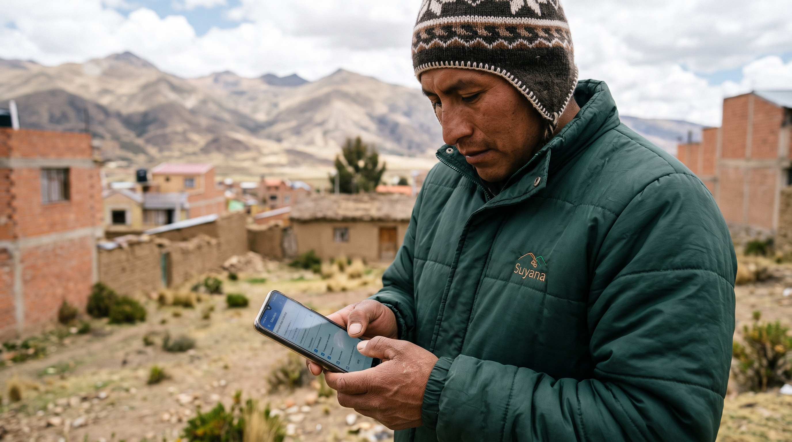
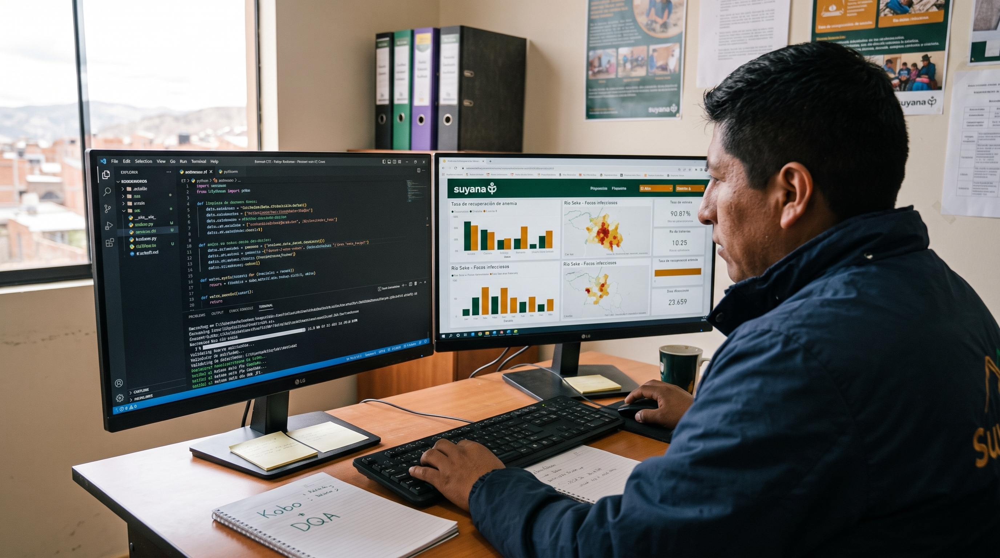
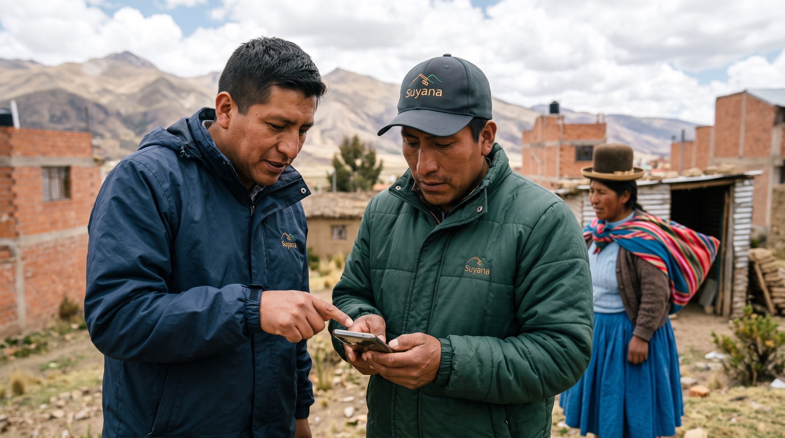

Resolución de Caso Práctico - Especialista de Monitoreo, Evaluación y Aprendizaje (MEAL) y Gestión del Conocimiento
Resolución estratégica interconectada para la evaluación del Programa Municipio Saludable (PMS 2024–2026), su factibilidad de expansión urbana en El Alto (Distrito 4) y la consolidación del ecosistema KoboToolbox – ETL – Power BI (SSOT).
Tarea 1A: Enfoque Mixto Participativo (El "Por Qué" de los Datos)
1. Diagnóstico Base
Revisión documental y marco metodológico.
2. Dimensión Cuanti
Arquitectura SSOT, KoboToolbox y Power BI.
3. Dimensión Cuali
Cambio Más Significativo (MSC) y Focus Groups.
4. Análisis Contribución
Cruce de variables vs. TOC.
Al operar sin grupos de control, la evaluación medirá cómo Suyana contribuyó al cambio frente a la presencia de otros actores territoriales.
Integración de 2 Mundos Estrategia
- Lo Cuantitativo: Cobertura extraída de KoboToolbox y Power BI.
- Lo Cualitativo: Entrevistas para capturar el verdadero impacto (MSC).
Estrategia de Muestreo 95% Nivel Confianza
Se aplicará un muestreo estadístico estratificado sobre la población beneficiaria. Este rigor matemático garantiza la validez externa y la representatividad territorial de los hallazgos.
Triangulación de Fuentes Validación Cruzada
Cruce independiente entre Familias, Actores Municipales y Unidades Móviles para mitigar sesgos evaluativos.
Tarea 1B: Matriz de Evaluación Integral y Preguntas Priorizadas
| Criterio CAD | Pregunta de Evaluación | Evidencia Requerida | Fuente / Unidad de Análisis | Método | Enfoque de Análisis |
|---|---|---|---|---|---|
| ★ 1. Pertinencia | ¿En qué medida el diseño integral del PMS respondió a las necesidades prioritarias en salud, educación y DESMA de los territorios? | Grado de alineación entre estrategias del PMS y demandas comunitarias/municipales. | Familias beneficiarias / Coordinación municipal. | Grupos Focales y Revisión Documental. | Cualitativo: Contextual y valorativo. |
| 2. Coherencia | ¿Cómo se articuló el PMS con las políticas municipales, salud (SEDES) y educación existentes? | Convenios activos, sinergias operativas y complementariedad con POAs locales. | Actores municipales / Equipo de Proyecto. | Entrevistas (KII) y Verificación Documental. | Cualitativo: Análisis institucional. |
| 3. Eficacia | ¿Se alcanzaron los resultados e indicadores de cobertura previstos durante el trienio 2024–2026? | % de cumplimiento de metas físicas y alcance territorial en los 4 subprogramas. | Bases KoboToolbox / Tableros Power BI / Equipo técnico. | Análisis Estadístico Descriptivo y Reuniones. | Cuantitativo: Varianza / Fact-based. |
| 4. Eficiencia | ¿Se utilizaron los recursos operativos y las 7 unidades móviles de forma oportuna y costo-efectiva? | Relación costo-tiempo-alcance logístico en despliegues territoriales. | Coordinadores de Subprograma / Unidades Móviles. | Entrevistas y Análisis Administrativo. | Mixto: Eficiencia operativa. |
| ★ 5. Impacto | ¿Cuáles fueron los cambios más significativos en las condiciones de vida y cómo contribuyó el PMS frente a otros factores? | Narrativas verificadas de transformación familiar/escolar (previstas e imprevistas). | Familias o unidades familiares beneficiarias. | Cambio Más Significativo (MSC) en Grupos Focales. | Mixto: Elucidación de mecanismos y Contribución. |
| ★ 6. Sostenibilidad | ¿Qué capacidades, prácticas y mecanismos de salud, educación y DESMA se mantienen activos en la cohorte 2021–2023? | Prácticas autogestionadas vigentes 3 años después del retiro directo de Suyana. | Familias y Actores Municipales (Cohorte 2021–2023). | Encuesta Estratificada + MSC / Grupos Focales. | Mixto: Triangulación concurrente ex-post. |
Tarea 1C: Matriz de Riesgos y Gobernanza Evaluativa

Desafío Logístico y Operativo
Evaluar un programa de alta movilidad exige rigor para no interrumpir la atención médica de las 7 unidades. El diseño MEAL debe adaptarse al terreno, no al revés.
Para garantizar la credibilidad y viabilidad de la evaluación, hemos blindado 5 riesgos críticos:
Sesgo de Autoevaluación Interna
➔ Mitigación: Auditoría cruzada y triangulación independiente con Impact Management (HQ Suiza).
Falsa Atribución Causal
➔ Mitigación: Mapeo de actores y Análisis de Contribución (metodología no experimental).
Dispersión y Calidad de Datos (DQA)
➔ Mitigación: Verificación automatizada ETL y validación temprana de bases históricas.
Rotación del Personal Histórico
➔ Mitigación: Grupos focales para reconstrucción de memoria institucional.
Localización Cohorte (2021-2023)
➔ Mitigación: Muestreo estratificado ex-post coordinado con autoridades originarias.
Tarea 1D: Plan de Trabajo de 30 Días (Onboarding)
| Fase / Prioridad | Actividades Principales | Actores Clave (RACI) | Producto Esperado |
|---|---|---|---|
| 1. Inmersión Semana 1 |
Revisión bases Kobo, Power BI histórico y reuniones estratégicas. | Impact Mgmt (Suiza), Dirección. | Diagnóstico Evaluabilidad. |
| 2. Metodología Semana 2 |
Diseño de estrategia mixta y cálculo de muestra estratificada. | Dirección PMS. | Propuesta Aprobada. |
| 3. Herramientas Semana 3 |
Programación XLSForm y guías para grupos focales. | 4 Coordinadores PMS. | Matriz Validada. |
| 4. Pilotaje Semana 4 |
Despliegue piloto DQA en terreno y calibración. | Equipo 7 Unidades Móviles. | Kit Calibrado. |
Tarea 2A: Matriz de Evidencia Necesaria y Umbrales para la Toma de Decisiones
| Categoría de Información | ¿Qué necesita saber? | ¿Por qué es crítico? | ¿Cómo se obtendría? | ¿Qué decisión permite tomar? | Indicador / Dato Clave de Investigación |
|---|---|---|---|---|---|
| 1. Dinámicas Demográficas y Socioculturales | Multilocalidad y migración aymara, deserción escolar y dinámica familiar periurbana. | El D-4 no es rural; el hacinamiento y movilidad diaria exigen horarios y enfoques distintos. | Cartografía Censo 2024 (INE), SIE Distrital y Grupos Focales con Juntas Vecinales. | Orientar Educación hacia retención escolar urbana, apoyo técnico y prevención de violencia. | D-4: 107.147 hab. 82 urbanizaciones y 51 Unidades Educativas (alta densidad). |
| 2. Economía y Medios de Vida Urbanos | Subempleo juvenil, comercio informal y viabilidad real de huertos urbanos. | El modelo agrícola rural DESMA fracasa si depende de subsidio o si venden todo sin autoconsumo. | Estudios UMSA/CEDLA, mapeo de ferias (Wali Sumita / EcoHuertas) y encuestas. | Pivotar de carpas aisladas a Carpas Comunitarias/Escolares, economía circular y BTH juvenil. | Índice AUP < 0.65 Estudio 2025: baja sostenibilidad de carpas familiares aisladas. |
| 3. Mapeo de Actores y Gobernanza | Presencia de ONGs, GAMEA, Subalcaldía D-4, FEJUVE, Juntas Escolares y COLOSAS. | Territorio altamente politizado con rotación de subalcaldes y disputas por áreas de equipamiento. | Stakeholder Mapping, revisión POA D-4 y entrevistas a informantes clave (KII). | Construir una Licencia Social Tripartita (GAMEA/SEDES + FEJUVE + Escuelas) y microfocalizar 2–3 sectores. | 82 Juntas Vecinales Alta rotación en Subalcaldía D-4 exige blindaje institucional. |
| 4. Salud Integral y Riesgo Ambiental | Saturación de la Red Los Andes (CS San Felipe de Seke) y focos infecciosos del Río Seke. | La suplementación con hierro fracasa si hay reinfección parasitaria por aguas contaminadas. | Registros SNIS-VE / SEDES La Paz e informes de auditoría ambiental (Contraloría). | Reorientar Unidades Móviles a tamizaje escolar y exigir agua segura / saneamiento ambiental. | Río Seke Contaminado Descargas de mataderos clandestinos y 17.328 hab/centro salud. |
| 5. Lecciones Aprendidas Previas | Aciertos, barreras y adaptaciones de ciclos previos del PMS y programas activos en La Paz. | Capitaliza activos institucionales existentes y evita repetir errores operativos en el piloto. | Sistematizaciones previas, evaluaciones de Suyana y talleres con equipo histórico. | Desplegar becarios universitarios aymaras (UMSA/UACs) como brigadistas técnicos comunitarios. | Activo: Beca Generación Convenios vigentes Suyana–UMSA y SEDES La Paz. |
Tarea 2B: Liderazgo Facilitador y Teoría de Cambio (Piloto)
📊 1. Procesamiento Analítico
Síntesis temática de la evidencia demográfica, económica y de salud. Transformamos datos brutos en insumos ejecutivos para la toma de decisiones.
🧠 2. Sensemaking Interno
Talleres de alineación con Dirección, Coordinadores e Impact Management. Unificamos la visión institucional antes de ir al terreno.
🤝 3. Co-diseño Territorial
Mesas participativas (GAMEA, Red Los Andes, FEJUVE). Validamos la viabilidad sin generar falsas expectativas en el D-4.
Transversal:
Microfocalización
Territorial D-4
📑 INSUMOS
- Convenios SEDES / GAMEA / FEJUVE.
- Unidades Móviles Suyana.
- Becarios UMSA.
- Guía AUP + Cosecha Lluvia.
🛠️ PRODUCTOS
- Tamizaje y desparasitación intramuros.
- Carpas solares (riego autónomo).
- Fortalecimiento BTH (oficios).
- Mesas de gestión barrial.
🎯 RESULTADOS
- Reducción parasitosis y malnutrición.
- Seguridad alimentaria (autoconsumo).
- Jóvenes en economía circular.
- Freno a degradación local (Río Seke).
🌱 IMPACTO
- Reducción de vulnerabilidad estructural.
- Resiliencia climática.
- Inserción económica efectiva (familias aymaras).
Tarea 3A: Gobernanza de Datos mediante Matriz RACI (Filtros Activos)
| Fase del Ciclo DQA / Tarea | Equipo Campo | Coordinadores | ★ Especialista MEAL | Resp. Sistemas | Impact Mgmt | Dirección |
|---|---|---|---|---|---|---|
| 1. Prevenir el error (XLSForm y registro) | R (Captura) | A | R / C (Diseña) | C | I | I |
| 2. Identificar el error (rutinas ETL DQA) | I | I | R / A (Audita) | C | I | I |
| 3. Comunicar el error (alertas focalizadas) | I | C | R / A (Reporta) | I | I | I |
| 4. Corregir el error (limpieza primaria/ETL) | R (Dato) | A | R (ETL) / C | C | I | I |
| 5. Verificar corrección (validación SSOT) | I | C | R / A (Valida) | I | I | I |
| 6. Analizar recurrencia (humana vs sistema) | C | C | R / A (Lidera) | C | C | I |
| 7. Escalar un problema (falla estructural) | I | C | R (Propone) | C | C | A (Decide) |
Tarea 3B: Estrategia de Mitigación en 3 Dimensiones (Cero Carga)

Bloqueo Preventivo (KoboToolbox XLSForm)
- Vacíos (24 casos): Restricción
required = yes. El formulario impide avanzar. - Fechas de Nacimiento (18 casos): Validar que no sea fecha futura usando
constraint: . <= today()+constraint_message. - Comunidad Equivocada (11 casos): Uso de
choice_filter(Menú en Cascada) atado a la selección del municipio. - Año Intervención (5 casos): Metadatos ocultos. Campo
read_only = yesalimentado portoday().

Limpieza Automatizada (Python/Power Query)
- Código Encuestador Erróneo (7 casos): El script cruza el
usernamede Kobo contra la tabla maestra de RRHH y corrige la asignación de equipo automáticamente. - Duplicación por Sincronización: Algoritmo de descarte usando llave compuesta: ID_Beneficiario + Fecha + Subprograma.
- Validación Estructural: Identifica outliers estadísticos antes de publicarlos en el Single Source of Truth (SSOT) de Power BI.

Gestión del Cambio Focalizada
- Empatía Tecnológica: Los duplicados recurrentes (35 casos) suelen nacer de inseguridad al subir datos offline (pulsar "enviar" múltiples veces).
- Acción Quirúrgica: Nada de "talleres aburridos generales". Sesiones de acompañamiento de 10 minutos, 1 a 1 en terreno, solo con los usuarios que presentan la falla en el dashboard DQA.
- Amnistía Histórica: Limpieza del 40% pendiente por parte de Sistemas/MEAL para arrancar en "Cero" con los nuevos XLSForms.
¡Muchas Gracias!
“Un sistema MEAL de excelencia no añade carga burocrática al terreno: blinda la calidad del dato en el origen, convierte la evidencia en decisiones estratégicas oportunas y transforma cada intervención rural o urbana en aprendizaje vivo para las familias bolivianas.”